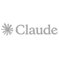
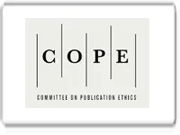
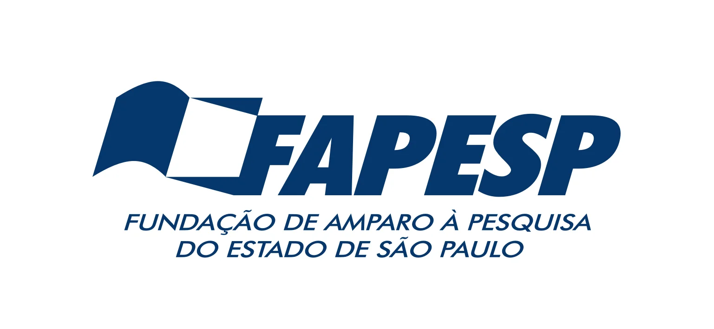
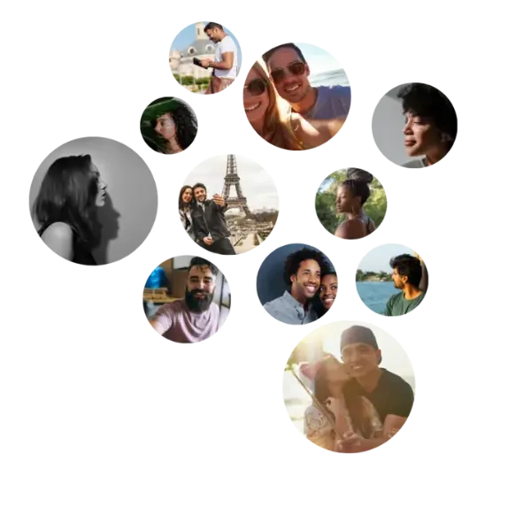
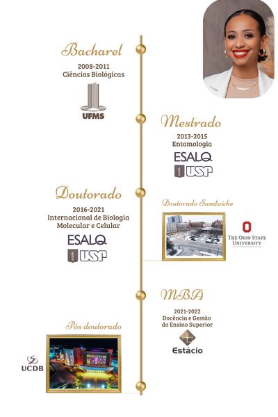

O Curso Disserta 15D é o Método V.O.E. completo aplicado à sua dissertação: programa em vídeo com 15 dias de execução, Kit de prompts incluso e Revisão Bibliográfica como aula dedicada. Para mestrandos com dados coletados e prazo de qualificação ou defesa.
Veja os resultados reais de pessoas que aplicaram o método e alcançaram seus objetivos.
"Foi um divisor de águas na minha vida acadêmica."
Joice Godoy Landre — Fisioterapeuta
"Eu me senti bem seguro, bem apoiado e estruturado."
Acácio Lima dos Santos — Servidor público, jurista e palestrante
O método funciona com a IA que você já usa.

Quando escrevi minha dissertação na Esalq/USP, ninguém me ensinou o processo. Aprendi testando, errando, recebendo de volta versões com mais tinta vermelha do que texto original. A Revisão Bibliográfica foi o capítulo que mais me travou: dezenas de artigos lidos e nenhuma clareza sobre como posicioná-los.
Hoje, com mais de 15 anos orientando pesquisadores e revisando artigos para a Springer Nature, vejo o mesmo ciclo se repetindo. Mestrandos competentes que travam na hora de transformar dados coletados em texto acadêmico coerente. Não é falta de conhecimento. É falta de sistema.
O Curso Disserta 15D existe porque esse sistema deveria estar disponível desde o primeiro dia do mestrado.
A Dra. Nathalia Cavichiolli é doutora em Biologia Molecular e Celular pela Esalq/USP com doutorado sanduíche na The Ohio State University (EUA), dois pós-doutorados e MBA em Gestão e Docência no Ensino Superior. Revisora de periódicos científicos internacionais pela Springer Nature, especialista em escrita científica com mais de 15 anos de experiência na produção, revisão e orientação de textos acadêmicos. Criadora do Método V.O.E., com mais de 3.300 alunos em 15 países.
"O sistema acadêmico te ensinou a pesquisar. Não te ensinou a escrever com sistema. O Curso existe porque essa lacuna não deveria ser sua responsabilidade resolver sozinha."
Use IA como apoio, mantendo autoria humana, transparência e rigor. Veja o que dizem as referências que você confia:
"O uso de ferramentas e recursos que auxiliam os autores na elaboração de seus manuscritos e recomendável, desde que mantida a integridade e a responsabilidade dos autores."
scielo.org/pt-br/sobre-o-scielo/metodologias-e-tecnologias/guia-de-uso-de-ferramentas-e-recursos-de-inteligência-artificial-na-comunicação-de-pesquisas-na-rede-scielo/

"AI tools, such as ChatGPT, cannot be listed as an author of a paper. Os autores humanos permanecem totalmente responsáveis por todo o conteúdo, inclusive o gerado com apoio de IA."
publicationethics.org/cope-position-statements/ai-author
"Large Language Models (LLMs), such as ChatGPT, do not currently satisfy our authorship criteria. Use of an LLM should be properly documented in the Methods section."
nature.com/nature-portfolio/editorial-policies/ai

"Periódicos científicos não permitem que ferramentas de IA sejam consideradas autoras de trabalhos acadêmicos. O humano é sempre o responsável pelos resultados científicos."
revistapesquisa.fapesp.br/pesquisadores-usam-inteligência-artificial-em-tarefas-acadêmicas/
IA é aceita, desde que usada com ética, transparência e responsabilidade humana. O Curso Disserta 15D ensina exatamente esse uso.
Baseado em 15 anos de orientação real e no Método V.O.E., usado por 3.300+ pesquisadores. Cada módulo resolve um problema específico do processo de escrita.
O Método V.O.E. completo em 7 módulos (Diagnóstico, Ordenação, Estruturação, Elaboração, Singularização, Refinamento, Interiorização) aplicados à sua dissertação em 15 dias de execução, organizados em 5 estágios. Inclui Revisão Bibliográfica como aula dedicada. Aulas práticas de 3 a 5 minutos cada, com execução imediata.
100+ prompts organizados em trilha sequencial, do tema a versão final. Setup IA, Prompt de Contexto mestre, 10 tipos de pesquisa, CEP/TCLE/LGPD, Kit Prova de Autoria.
O capítulo que mais trava na dissertação ganha aula própria: como ler, sintetizar e posicionar criticamente dezenas de artigos sem travar na escrita.
Comunidade compartilhada entre os alunos dos 4 cursos do Método V.O.E. Perguntas, trocas de experiência e suporte entre pares.
Sistema completo: método em vídeo + ferramentas em PDF + Revisão Bibliográfica + comunidade. Desenvolvido por pesquisadora com 15 anos de orientação real.
"Finalizei minha dissertação em 14 dias usando o método. A banca aprovou sem pedir reformulação de nenhum capítulo."
"Usei os prompts para montar problema, objetivos e metodologia. Meu orientador disse que foi a melhor versão que já recebeu."
"A Revisão Bibliográfica era o capítulo que mais me travava. Com a aula dedicada, consegui posicionar 40 fontes em 3 dias."
"Minha dissertação tem 87 páginas e o orientador disse que ficou mais coesa do que a maioria das que ele orienta. Tudo com IA ética e prova de autoria."
Você tem os dados coletados, mas não consegue transformar resultados em capítulos coerentes. Metodologia, Discussão, Revisão Bibliográfica: cada seção parece um documento separado. A dissertação existe em pedaços, não como texto coeso.
Você tem medo de usar IA sem saber provar que o texto é seu. 71% dos pesquisadores relatam essa insegurança (fonte: formulário com 424 compradores). A dúvida paralisa mais do que a página em branco.
Você não consegue manter ritmo de escrita. Trabalha, cuida da família, estuda ao mesmo tempo. 45% da base tem 4 horas ou menos por semana para escrever. Cada sessão parece começar do zero.
Você releu a dissertação e sente que "não parece sua". A IA escreveu, você editou, mas se a banca perguntar por que aquela escolha metodológica está ali, você não tem certeza se consegue explicar.
O Módulo 2 (Estruturação) ensina a montar o esqueleto de todos os capítulos antes de escrever uma linha. O Módulo 3 (Elaboração) usa o Prompt de Contexto mestre para que Metodologia, Resultados e Discussão conversem entre si. A dissertação fecha porque foi construída com sistema, não com prompts avulsos.
O Módulo 3 documenta cada decisão com rastreabilidade completa. O Módulo 4 (Singularização) transforma o output da IA em texto com a sua voz. O Kit Prova de Autoria é o processo documentado para o orientador e para a banca.
O Módulo 1 (Ordenação) ensina o Protocolo 2-4h/semana: rituais de foco e gestão de tempo acadêmico que funcionam em blocos curtos. O programa Disserta 15D tem 15 dias de execução em 5 estágios, com aulas de 3 a 5 minutos cada.
O Módulo 4 (Singularização) tem checklist de 30 itens para construir voz autoral. O Teste de Defendibilidade pergunta: "Se alguém me questionar sobre isso na banca, eu consigo explicar com minhas próprias palavras?" Se a resposta é não, o texto volta para revisão.
Não é procrastinação. É um padrão específico que se repete quando não há sistema estruturado. Reconheça onde você está.
Você abre o documento, digita o título, rele o que já escreveu e fecha sem adicionar nada novo. No dia seguinte, repete. As semanas passam. O prazo do edital ou da qualificação avança. O documento ainda tem dois parágrafos.
Custo real: você perde o prazo ou entrega algo que você mesmo sabe que não está pronto.
Você sabe sobre o que vai pesquisar. Mas não consegue transformar isso em problema, objetivos e método que fecham entre si. Usa a IA, recebe outputs, mas as seções não conversam. A dissertação existe em pedaços, não como documento coeso.
Custo real: a banca reprova por falta de coerência interna. O colegiado pede reformulação completa.
Você usou a IA. O texto saiu. Mas você não sabe explicar por que aquela frase está ali. Na banca, alguém pergunta sobre uma escolha metodológica e você hesita. Não porque não sabe, mas porque a frase não nasceu do seu pensamento.
Custo real: você fica vulnerável a qualquer questionamento sobre autoria, exatamente no momento em que precisa de confiança.
ABNT, CEP, TCLE, cronograma, orçamento, formato do edital. Cada programa tem um formato diferente. Você nunca sabe se o que produziu está conforme. Descobre o problema no último momento.
Custo real: retrabalho nos dias de prazo, quando o tempo já era ontem.
Não é preguiça. É que não há um próximo passo claro para executar. Sem sistema, toda sessão começa do zero porque não há continuidade entre o que você fez ontem e o que precisa fazer hoje.
Não é erro da IA. É que você não tem um processo de uso que garanta que o output seja coerente com a sua pesquisa e defensável para a banca. Prompts sem método produzem texto que você não consegue defender.
Não é limitação intelectual. Transformar um tema em problema, objetivos e método coerentes é uma habilidade técnica específica. Uma que o programa não ensinou.
Não é que a IA não funciona. Ela gera texto. Mas você sente que precisa de mais do que prompts soltos: precisa de um sistema de pensamento que conecta cada etapa a anterior. O "como pensar enquanto faz".
Não é falta de esforço. Você já abriu o documento mais vezes do que consegue contar.
Não é falta de competência. Você foi aprovado no programa. A banca viu potencial na sua pesquisa.
Não é falta de vontade. Você quer entregar. Quer entregar bem. É exatamente por isso que trava: o padrão que você se impõe é alto e as ferramentas disponíveis até agora não são suficientes para chegar lá.
O que falta é um sistema estruturado que transforme o que você já sabe em um documento coeso, com clareza de onde você está e qual é o próximo passo. Não só prompts, mas o método de pensamento que conecta cada seção a anterior.
O sistema acadêmico te ensinou a pesquisar. Não te ensinou a estruturar e defender. Isso não é defeito seu. É uma lacuna do sistema.
E é exatamente essa lacuna que o Curso Disserta 15D foi construído para preencher.
Enquanto você está nesse ciclo, outros pós-graduandos estão entregando dissertações com coerência interna, autoria comprovável e confiança diante da banca. Não porque são mais capazes. Porque tem um sistema que você ainda não tem.
O Curso Disserta 15D é esse sistema.
Quero o Curso Disserta 15D por R$397Dissertação de Mestrado em 15 Dias
R$397 (ou 12x)
Para quem precisa escrever dissertação de mestrado com sistema completo: mestrando, mestrando em qualificação ou pesquisador submetendo a agência de fomento.
Este não é mais um pacote de prompts. É o Método V.O.E. completo, aplicado especificamente à dissertação de mestrado. Cada módulo ensina um modo de pensar, não apenas um prompt para colar. Quando você termina, você não tem só uma dissertação pronta: você tem o sistema que permite escrever qualquer texto acadêmico futuro com autonomia.
Você ainda recebe o Kit V.O.E. Dissertação Aprovada incluso: mais de 100 prompts organizados em trilha, prontos para usar durante as aulas e depois delas.
Acessa a área de membros. Responde o Formulário de Diagnóstico (Módulo 0) e recebe seu guia personalizado de navegação. Assiste as aulas na ordem indicada. Aplica o Kit de prompts dentro do sistema ensinado em cada módulo. Ao final, passa pelo Refinamento (Módulo 5) e sai com a dissertação coesa, revisada e defensável.
A biblioteca inteira da Dra. Nathalia num único acesso
por R$1.297
ou em até 12x no cartão
Os 4 Kits V.O.E. + os 4 Cursos completos (Projeto 3D, Disserta 15D, Tese 30D, Artigo 7D) + 5 ebooks especializados (Antiplágio e Anti-IA, Análise de Dados, Banca Simulada, Revisão Sistemática, Escrita em Inglês). 13 produtos num único acesso.
O Módulo 0 traz o Formulário de Diagnóstico. Você responde sobre seu estágio, tipo de dissertação (qualificação ou defesa), área e prazos. Recebe um guia personalizado de navegação: quais módulos são prioritários para o seu caso.
Você não assiste o que não precisa. O curso se adapta a você.
O Módulo 1 ensina o Protocolo 2-4h/semana: rituais de foco, gestão de tempo acadêmico e triagem de prioridades. Funciona em blocos curtos, para quem trabalha, estuda e cuida da família ao mesmo tempo.
Você não precisa de um dia inteiro. Precisa de sessões com propósito.
O Módulo 2 monta o esqueleto completo da dissertação (Brain Dump Acadêmico + Identidade de Voz). O Módulo 3 usa o Kit de prompts com o Prompt de Contexto mestre para elaborar cada seção com coerência e rastreabilidade.
Cada seção se conecta a anterior porque o sistema garante consistência.
O Módulo 4 transforma o output da IA em texto com a sua voz (checklist de 30 itens + Teste de Defendibilidade). O Módulo 5 passa pelas 7 camadas de revisão: estrutura, coesão, clareza, rigor, citações, ética, formatação.
Na banca, você explica cada parágrafo com suas próprias palavras.
O Disserta 15D aplica o método ao formato específico da dissertação de mestrado: 15 dias de execução em 5 estágios, com aulas curtas de 3 a 5 minutos de execução pura usando o Kit incluso. Cobertura completa: da Revisão Bibliográfica ao Abstract.
15 dias, uma dissertação defensável.
Após a confirmação do pagamento na Hotmart, você recebe acesso a área de membros. Aulas em vídeo + Kit em PDF. Sem aplicativo adicional. Sem prazo de expiração.
O Módulo 0 identifica seu perfil (qualificação ou defesa) e gera um guia de navegação personalizado. Você sabe exatamente por onde começar e quais módulos são prioritários para o seu caso.
Cada módulo ensina o modo de pensar. Cada prompt do Kit aplica esse pensamento. Você assiste, aplica, e a dissertação avança capítulo por capítulo com coerência garantida pelo Prompt de Contexto mestre.
Passe pelos checklists do Módulo 5, aplique o Teste de Defendibilidade do Módulo 4 e documente o processo com o Kit Prova de Autoria. Chegue a banca com a dissertação pronta e o processo rastreável.
Tentou escrever a dissertação sozinha, com prompts avulsos da internet. As seções não fechavam entre si. Não passou na primeira fase da seleção de doutorado.
Usou o sistema do Curso (Estruturação + Elaboração + Singularização). Entregou dissertação com Metodologia, objetivos e método coerentes. Banca aprovou sem pedido de reescrita.
Chegou à defesa com dissertação que o orientador ainda pedia para reescrever. A banca pediu reformulação da metodologia inteira.
Refez a dissertação usando o programa Disserta 15D + Módulo 4 (Singularização). Apresentou na qualificação com segurança. Banca aprovou sem pedido de reescrita.
Submeteu dissertação com capítulo de Discussão com resultados esperados genéricos. Parecerista comentou que "carecia de detalhamento de impacto". Banca pediu reformulação.
Usou os 9 tipos de resultados esperados do Kit (Cap. 9) dentro do sistema do Curso. Detalhou resultados acadêmicos, tecnológicos, sociais e de capacitação. Dissertação aprovada na segunda versão.
Comece pelo Módulo 0 (Diagnóstico). Responda o formulário e receba seu guia personalizado de navegação. Saiba exatamente quais módulos são prioritários para o seu caso antes de avançar.
Assista os Módulos 1 e 2 (Ordenação e Estruturação) e configure o Prompt de Contexto (Kit, Cap. 3). São 40 a 60 minutos de conteúdo. É a base que garante que todos os prompts e todas as seções seguintes funcionem com coerência. Pular essa etapa é como usar GPS sem informar o destino.
Execute o programa Disserta 15D com o Kit de prompts, na sequência indicada pelo Diagnóstico. Passe pelos Módulos 4 e 5 (Singularização e Refinamento) como verificação final antes de submeter.
A ordem é sugestão de fluxo, não promessa de prazo. O tempo de conclusão depende do estágio atual da sua pesquisa, da sua disponibilidade e da complexidade da metodologia escolhida.
Diagnóstico, Ordenação, Estruturação, Elaboração com Rastreabilidade, Singularização, Refinamento. O sistema de pensamento completo para escrita acadêmica com IA ética.
Aplicação do Método V.O.E. ao formato específico da dissertação de mestrado. Aulas curtas de 3 a 5 minutos de execução pura.
17 capítulos, mais de 100 prompts em trilha sequencial. Prompt de Contexto mestre, 10 tipos de pesquisa, CEP/TCLE/LGPD, Super Prompt integrador, checklists de conformidade.
Identifica seu perfil e gera guia personalizado de navegação. Você sabe por onde começar.
Comunidade de alunos dos 4 cursos do Método V.O.E. Perguntas, trocas de experiência, suporte entre pares.
Prompts de rastreamento do processo, modelo de Declaração de Uso Responsável de IA e orientações para apresentar o uso da ferramenta ao orientador e a banca.
Tudo isso por R$397 (12x). Menos do que uma hora de orientação individual, com um sistema que você aplica quantas vezes precisar, em qualquer texto acadêmico, sem custo adicional.
O Curso Disserta 15D ensina a usar IA com transparência, rastreabilidade e autoria comprovável. Aqui está o que você vai dominar.
O Módulo 3 (Elaboração) ensina a usar o Kit de prompts com o Prompt de Contexto mestre, garantindo que cada output seja coerente com a sua pesquisa. O Módulo 4 (Singularização) transforma o output em texto com a sua voz. A IA é ferramenta de apoio, não substituto do pensamento crítico.
O Módulo 3 inclui o prontuário completo de elaboração: quem decidiu o que é por que. O Kit Prova de Autoria (Cap. 15 do Kit incluso) documenta todo o processo de escrita.
O Módulo 4 inclui o Teste de Defendibilidade: para cada trecho da dissertação, você responde "eu consigo explicar e sustentar com minhas próprias palavras?" Se a resposta é não, o trecho volta para revisão. Ninguém passa pela Singularização com texto que não é seu.
O Kit incluso traz modelo de Declaração que cobre: quais ferramentas foram usadas, em quais seções, com qual propósito e como a autoria humana foi preservada. Adaptável para qualquer PPG, agência de fomento ou periódico.
Você pesquisa no YouTube, encontra tutoriais genéricos, tenta adaptar para o seu contexto. Usa prompts avulsos que alguém postou. Os capítulos da dissertação não conversam porque foram produzidos em sessões separadas, sem contexto compartilhado. Cada vez que você abre a IA, começa do zero.
Prompts organizados funcionam (e o Kit V.O.E. funciona). Mas prompts sem sistema de pensamento produzem texto que você não consegue defender na banca. A ferramenta te diz O QUE fazer. O sistema te ensina COMO PENSAR enquanto faz. São camadas diferentes.
Método V.O.E. completo em vídeo (7 módulos + trilha 15D) + Kit de 100+ prompts incluso. Desenvolvido por revisora de periódicos internacionais Springer Nature com 15 anos de orientação real e 3.300+ alunos. O método que te ensina a pensar, as ferramentas que te ajudam a executar, e o GPS que faz qualquer dissertação chegar ao destino.

Mestrando com dados coletados que precisa transformar resultados em dissertação de 60 a 80 páginas e quer mais do que prompts: quer o sistema de pensamento que conecta todos os capítulos.
Mestrando com dados coletados que precisa de uma dissertação coesa, defensável e com autoria comprovável, usando o tempo que tem (mesmo que sejam 2 a 4 horas por semana).
Mestrando travado na Revisão Bibliográfica, Discussão ou Introdução que precisa de um sistema para superar os capítulos que mais travam e fechar a dissertação com coerência entre as partes.
Quem já tentou usar IA para escrever e percebeu que prompts avulsos não resolvem: precisa do sistema de pensamento que transforma output genérico em escrita autoral.
Quem está buscando um serviço de escrita ou quer que alguém produza a dissertação. O Curso é um sistema: você aprende, você executa, você assina.
Quem já tem a dissertação finalizada e defendida. Este Curso é para quem ainda está escrevendo.
Quem quer apenas copiar e colar textos prontos, sem entender o raciocinio por tras de cada capítulo da dissertação.
Quem não está disposto a dedicar algumas horas para assistir as aulas e aplicar o método. O sistema funciona, mas exige que você participe do processo.
Quem busca um modelo genérico que sirva para qualquer tipo de texto acadêmico. O Curso Disserta 15D é focado exclusivamente em dissertação de mestrado.

Criadora do Método V.O.E.
Sou revisora de periódicos científicos internacionais pela Springer Nature e especialista em escrita científica com mais de 15 anos de experiência na produção, revisão e orientação de textos acadêmicos.
Sou doutora em Biologia Molecular e Celular pela Esalq/USP com doutorado sanduíche na The Ohio State University (EUA), dois pós-doutorados e MBA em Gestão e Docência no Ensino Superior. Atuei como professora universitária e já orientei centenas de dissertações, teses e artigos em diversas áreas.
Hoje, mais de 3.300 pesquisadores em 15 países usam o Método V.O.E. para escrever com mais velocidade, mais clareza e mais integridade.
O Curso Disserta 15D é o sistema que eu gostaria de ter tido quando escrevi a minha própria dissertação de mestrado. Ele te entrega o pensamento e as ferramentas que transformam qualquer dissertação num documento aprovável.
R$397 (ou 12x)
O Método V.O.E. completo aplicado à sua dissertação de mestrado.
ou 12x
R$1.297 (ou 12x)
Tudo do Curso Disserta 15D, mais todos os outros cursos e materiais:
ou 12x
Pagamento seguro via Hotmart. Cartao, boleto ou Pix.
Se você acessar o Curso e, por qualquer motivo, não quiser continuar, basta solicitar o reembolso dentro de 7 dias após a compra. Sem formulário longo. Sem precisar justificar.
A confiança na entrega é o que sustenta essa garantia. Você não precisa decidir com medo.
O acesso a área de membros e liberado imediatamente após a confirmação do pagamento pela Hotmart. Você recebe um e-mail com o link. As aulas em vídeo e o Kit em PDF estão disponíveis para acesso imediato. Sem prazo de expiração.
Não. O Kit incluso traz o Cap. 2 com setup básico de qualquer ferramenta de IA (ChatGPT, Claude, Gemini, SciSpace), sem pressupor conhecimento prévio. O Módulo 3 do curso ensina o uso com método. Se você sabe abrir um chat e digitar, você consegue.
Sim. Os módulos ensinam o sistema de pensamento universal para dissertações: problema, objetivos, método, resultados. O Kit incluso cobre 10 tipos de metodologia. Se a sua pesquisa é qualitativa, quantitativa, mista, pesquisa-ação ou revisão sistemática PRISMA, há prompts para o seu caso.
O Curso Disserta 15D inclui o Método V.O.E. completo em vídeo (7 módulos aplicados à dissertação, com 15 dias de execução em 5 estágios), Revisão Bibliográfica como aula dedicada, Kit V.O.E. Dissertação Aprovada com 100+ prompts e acesso ao grupo WhatsApp exclusivo dos alunos. Tudo num único acesso.
O Kit é a ferramenta: prompts organizados para produzir cada capítulo. O Curso é o sistema de pensamento: ensina como pensar enquanto usa os prompts, inclui a Revisão Bibliográfica (que o Kit não cobre) e o programa Disserta 15D com 15 dias de execução em 5 estágios. O Kit está incluso no Curso.
7 dias a partir da data de compra para solicitar reembolso integral, sem burocracia, diretamente pela Hotmart.
Não. As aulas são gravadas e disponíveis para acesso a qualquer momento, no seu ritmo. O Grupo WhatsApp oferece interação em tempo real com outros alunos.
O nome "Disserta 15D" (15 Dias) indica o tempo de execução da dissertação, não o tempo para assistir às aulas. São 15 dias em 5 estágios, com aulas de 3 a 5 minutos cada. Os 7 módulos do Método V.O.E. podem ser consumidos em 4 a 6 horas totais. O ritmo é seu, e o acesso não expira.
Você pode continuar usando prompts avulsos, torcendo para que as seções se encaixem e que a banca não pergunte o que você não sabe responder.
Ou pode acessar o sistema completo, construir a dissertação com coerência e autoria, e chegar à banca sabendo exatamente o que está no seu documento e por quê.
A dissertação não vai se escrever sozinha. Mas com o método certo, ela para de ser o problema que você adia.
Quero o Curso Disserta 15D por R$397VOE ALTO. VOE LEVE.